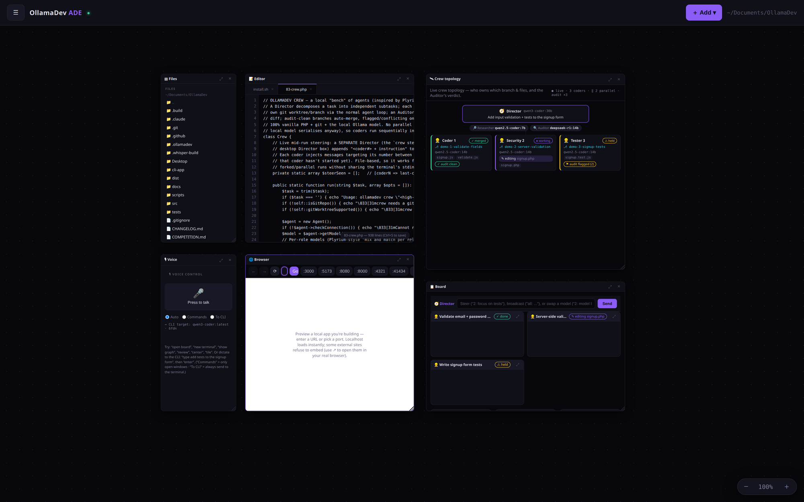

Standalone binaries — PHP is bundled in, so there's nothing else to install. Pick the CLI, the desktop app, or both.
curl -fsSL https://raw.githubusercontent.com/kennethyork/OllamaDev/main/install.sh | sh

The desktop & web ADE — one infinite canvas, your own Ollama models (local or cloud).
The terminal coding agent. Download, make it executable, and run — no PHP, no dependencies.
After downloading on macOS/Linux: chmod +x ollamadev-* && mv ollamadev-* ~/.local/bin/ollamadev
The Agentic Development Environment — an infinite canvas of draggable windows: terminals, editor, files, the live crew topology, voice control, a browser preview, and the board. The agent CLI is bundled in, so it's the only thing you download.
Linux AppImage: chmod +x and run — PHP is bundled, nothing to install. The .tar.gz / .zip archives (Linux/macOS/Windows) need PHP 8.4+ for the window: unzip and run ./OllamaDev-ADE (Windows: OllamaDev-ADE.bat). All need Ollama running locally.
All downloads come from the latest GitHub Release.
Prefer to build it yourself? git clone + make install (CLI) — see the install docs.